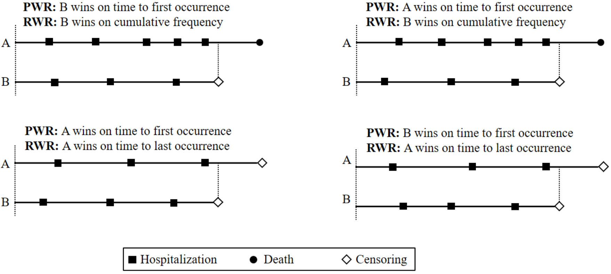
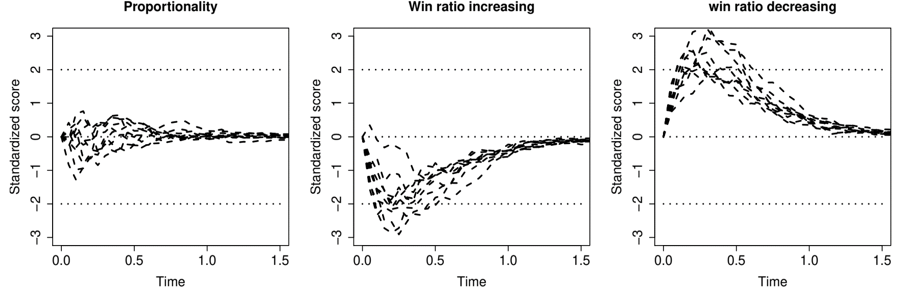
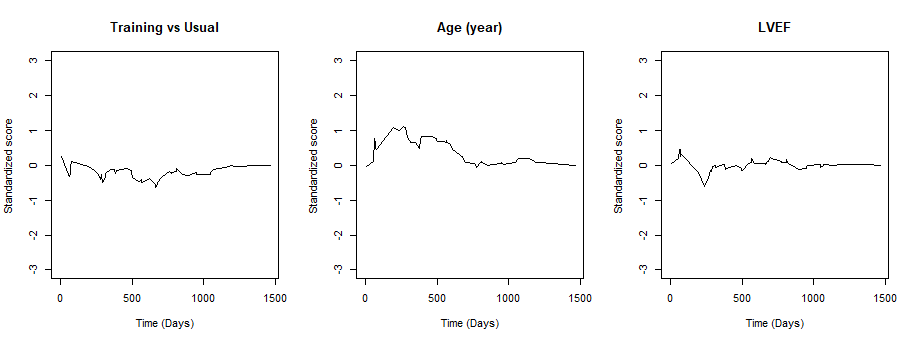

Applied Survival Analysis
Introduction to Composite Endpoints
Lu Mao
Department of Biostatistics & Medical Informatics
University of Wisconsin-Madison
Outline
Traditional vs hierarchical composites
Win ratio: two-sample analysis
Semiparametric regression of win ratio
\[\newcommand{\d}{{\rm d}}\] \[\newcommand{\T}{{\rm T}}\] \[\newcommand{\dd}{{\rm d}}\] \[\newcommand{\cc}{{\rm c}}\] \[\newcommand{\pr}{{\rm pr}}\] \[\newcommand{\var}{{\rm var}}\] \[\newcommand{\se}{{\rm se}}\] \[\newcommand{\indep}{\perp \!\!\! \perp}\] \[\newcommand{\Pn}{n^{-1}\sum_{i=1}^n}\] \[ \newcommand\mymathop[1]{\mathop{\operatorname{#1}}} \] \[ \newcommand{\Ut}{{n \choose 2}^{-1}\sum_{i<j}\sum} \]
$$
$$
Background & Rationale
The Composite Approach
- Complex outcomes
- Multivariate/Recurrent events
- (Semi-)Competing risks (death vs nonfatal events)
- Longitudinal measures (biomarkers) with survival endpoint
- Standard methods
- Joint models (frailty, random effects)
- Marginal models (event-specific analyses)
- Traditional composite
- Time to first event (event-free survival)
Examples and Advantages
- Examples
- Cardiovascular: major adverse cardiovascular events (MACE), e.g., death, nonfatal heart failure, myocardial infarction, stroke, etc.
- Oncology: death and tumor progression (progression-free survival)
- Advantages
- More events \(\to\) higher power \(\to\) smaller sample size/lower costs
- No need for multiplicity adjustment
- A unified measure of treatment effect
- Recommended by ICH-E9 “Statistical Principles for Clinical Trials” (1998)
Data and Notation
- Time-to-event
- \(D\): survival time; \(N^*_D(t)=I(D\leq t)\)
- \(N^*_1(t), \ldots, N^*_K(t)\): counting processes for \(K\) nonfatal event types
- Life history: \(\mathcal H^*(t)=\{N^*_D(u), N^*_1(u), \ldots, N^*_K(u):0\leq u\leq t\}\)
- Common feature
- Death most important, followed by some other events
Traditional Composite Endpoints
- Time to first event
- \(N_{\rm TFE}(t) = I\{N^*_D(t)+\sum_{k=1}^KN^*_k(t)\geq 1\}= I\{Y(t)\geq 1\}\)
- Weighted composite event process
- \(N_{\rm R}(t)=w_DN^*_D(t)+\sum_{k=1}^Kw_kN^*_k(t)\)
- Hierarchical composite endpoints (HCE)
- Death > nonfatal MACE > minor symptoms > …
- Use more data, avoid arbitrary specification of weights
Motivating Examples
- Colon cancer trial
- Levamisole + fluorouracil (\(n=304\)) vs control (\(n=315\))
- Relapse-free survival
- 258 (89%) deaths ignored
- HF-ACTION trial
- Exercise training (\(n=205\)) vs usual care (\(n=221\))
- Hospitalization-free survival
- 82 (88%) deaths + 707 (69%) hospitalizations ignored
Hierarchical Composite Endpoints
- Win ratio
- Ratio of probability of better / worse outcomes
- Initially two-sample comparison (Pocock et al., 2012)
- Extended to semiparametric regression
Win Ratio Basics
Standard Two-Sample
- Two-sample comparison (Pocock et al., 2012)
- Data: \(D_i^{(a)}, T_i^{(a)}, C_i^{(a)}\): survival, hospitalization, censoring times on \(i\)th subject in group \(a\) \((i=1,\ldots, N_a; a= 1, 0)\)
- Hierarchical composite: Death > hospitalization
- Pairwise comparisons \[\begin{align} \hat w^{(a, 1-a)}_{ij}&= \underbrace{I(D_j^{(1-a)}< D_i^{(a)}\wedge C_i^{(a)}\wedge C_j^{(1-a)})}_{\mbox{win on survival}}\\ & + \underbrace{I(\min(D_i^{(a)}, D_j^{(1-a)}) > C_i^{(a)}\wedge C_j^{(1-a)}, T_j^{(1-a)}< T_i^{(a)}\wedge C_i^{(1)}\wedge C_j^{(0)})}_{\mbox{inconclusive on survival, win on hospitalization}} \end{align}\]
- Prioritized comparison on \(\left[0, C_i^{(a)}\wedge C_j^{(1-a)}\right]\)
Pocock’s Rule
- Win, lose, or tie?

Calculation of Win Ratio
- Two-sample statistics
- Win (loss) fraction for group \(a\) (\(1-a\)) \[ \hat w^{(a, 1-a)}=(N_0N_1)^{-1}\sum_{i=1}^{N_a}\sum_{j=1}^{N_{1-a}}\hat w^{(a, 1-a)}_{ij}\]
- Win ratio statistic \[ WR = \hat w^{(1, 0)} / \hat w^{(0, 1)} \]
- Other measures
- Net benefit (proportion in favor): \(\hat w^{(1, 0)} - \hat w^{(0, 1)}\)
- Win odds: \((\hat w^{(1, 0)} - \hat w^{(0, 1)} + 1)/ (\hat w^{(0, 1)} - \hat w^{(1, 0)} + 1)\)
The Binary Case
- Consider binary \(Y^{(a)}= 1, 0\)
- \(\hat w^{(a, 1-a)}_{ij} = I(Y_i^{(a)}> Y_j^{(1-a)})=Y_i^{(a)}(1-Y_j^{(1-a)})\)
- Win (loss) fraction \[ \hat w^{(a, 1-a)} = (N_1N_0)^{-1}\sum_{i=1}^{N_a}\sum_{j=1}^{N_{1-a}}Y_i^{(a)}(1-Y_j^{(1-a)}) = \hat p^{(a)}(1-\hat p^{(1-a)})\] where \(\hat p^{(a)}= N_a^{-1}\sum_{i=1}^{N_a} Y_i^{(a)}\)
- Equivalencies \[\begin{align} {\rm Win\,\, ratio}&= \frac{\hat w^{(1, 0)}}{\hat w^{(0, 1)}} = \frac{\hat p^{(1)}(1-\hat p^{(0)})}{\hat p^{(0)}(1-\hat p^{(1)})} = {\rm Odds \,\, ratio}\\ {\rm Net \,\, benefit}&=\hat w^{(1, 0)} - \hat w^{(0, 1)} = \hat p^{(1)}- \hat p^{(0)}= {\rm Risk \,\, difference} \end{align}\]
General Data
- Outcome data \[\mathcal H^{*{(a)}}(t)=\left\{N^{*{(a)}}_D(u), N^{*{(a)}}_1(u), \ldots, N^{*{(a)}}_K(u):0\leq u\leq t\right\}\]
- \(N^{*{(a)}}_D(u), N^{*{(a)}}_1(u), \ldots, N^{*{(a)}}_K(u)\): counting processes for death and \(K\) different types of nonfatal events
- Observed data \[\{\mathcal H^{*{(a)}}(X^{(a)}), X^{(a)}\}\]
- Life history observed up to \(X^{(a)}= D^{(a)}\wedge C^{(a)}\)
General Rule
- Win function \[\mathcal W(\mathcal H^{*{(a)}}, \mathcal H^{*{(1-a)}})(t) =I\left\{\mathcal H^{*{(a)}}(t) \mbox{ is more favorable than } \mathcal H^{*{(1-a)}}(t)\right\}\]
- Basic requirements
- (W1) \(\mathcal W(\mathcal H^{*{(a)}}, \mathcal H^{*{(1-a)}})(t)\) is a function only of \(\mathcal H^{*{(a)}}(t)\) and \(\mathcal H^{*{(1-a)}}(t)\)
- (W2) \(\mathcal W(\mathcal H^{*{(a)}}, \mathcal H^{*{(1-a)}})(t)+\mathcal W(\mathcal H^{*{(1-a)}}, \mathcal H^{*{(a)}})(t) \in \{0, 1\}\)
- (W3) \(\mathcal W(\mathcal H^{*{(a)}}, \mathcal H^{*{(1-a)}})(t)=\mathcal W(\mathcal H^{*{(a)}}, \mathcal H^{*{(1-a)}})(D^{(a)}\wedge D^{(1-a)}\wedge t)\)
- Interpretations
- (W1) Consistency of time frame
- (W2) Either win, loss, or tie
- (W3) No change of win-loss status after death (satisfied if death is prioritized)
- Basic requirements
Generalized Win Ratio
- General WR statistics \[\begin{equation}\label{eq:wr:gen_WR}
\hat{\mathcal E}_n(\mathcal W)=\frac{(N_1N_0)^{-1}\sum_{i=1}^{N_1}\sum_{j=1}^{N_0}\mathcal W(\mathcal H^{*{(1)}}_{i}, \mathcal H^{*{(0)}}_{j})(X^{{(1)}}_{i}\wedge X^{{(0)}}_{j})}
{(N_1N_0)^{-1}\sum_{i=1}^{N_1}\sum_{j=1}^{N_0}\mathcal W(\mathcal H^{*{(0)}}_{j}, \mathcal H^{*{(1)}}_{i})(X^{{(1)}}_{i}\wedge X^{{(0)}}_{j})}
\end{equation}\]
- Window of comparison: \([0, X^{{(1)}}_{i}\wedge X^{{(0)}}_{j}]\), by a general \(\mathcal W\)
- Stratified win ratio \[ \frac{\text{Weighted sum of within-stratum wins}}{\text{Weighted sum of within-stratum losses}} \]
Pocock’s Win Ratio
- Win function
- \(K\) nonfatal events hierarchically ranked
- \(T^{(a)}_k\): time of first event in \(N_k^{*{(a)}}(t)\) \((k=1,\ldots, K)\) \[\begin{align}\label{eq:wr:PWR}
\mathcal W_{\rm P}(\mathcal H^{*{(a)}}, \mathcal H^{*{(1-a)}})(t)&=I\{D^{(1-a)}<D^{(a)}\wedge t\}\notag\\
&\hspace{2mm}+I\{D^{(a)}\wedge D^{(1-a)}>t, T_{1}^{(1-a)}<T_{1}^{(a)}\wedge t\}\notag\\
&\hspace{2mm}+\sum_{k=2}^KI\{\tilde T_{k-1}^{(a)}\wedge \tilde T_{k-1}^{(1-a)}>t, T_{k}^{(1-a)}<T_{k}^{(a)}\wedge t\}
\end{align}\]
- \(\tilde T_{k-1}^{(a)}=D^{(a)}\wedge T_{1}^{(a)}\wedge\cdots\wedge T_{k-1}^{(a)}\)
- Win ratio statistic: \(\hat{\mathcal E}_n(\mathcal W_{\rm P})\)
Taking Recurrent Events
- Recurrent-event win ratio (RWR)
- Death > number of recurrent events > time to last event

Time-to-First-Event
- Compare on order of first event
- Win function \[
\mathcal W_{\rm TFE}(\mathcal H^{*{(a)}},\mathcal H^{*{(1-a)}})(t)=I(\tilde T^{(1-a)}<\tilde T^{(a)}\wedge t)
\]
- \(\tilde T^{(a)}=\min(D^{(a)}, T_1^{(a)},\ldots, T_K^{(a)})\)
- Allowable but not desirable
- Win function \[
\mathcal W_{\rm TFE}(\mathcal H^{*{(a)}},\mathcal H^{*{(1-a)}})(t)=I(\tilde T^{(1-a)}<\tilde T^{(a)}\wedge t)
\]
Semiparametric Regression of Win Ratio
Regression Framework
- Motivation
- Meaningful estimand of effect size
- Multiple (quantitative) predictors
- Modelin target
- Two independent subjects \((\mathcal H_i, Z_i)\) and \((\mathcal H_j, Z_j)\)
- \(E\{\mathcal W(\mathcal H_i,\mathcal H_j)(t)\mid Z_i, Z_j\}\): Conditional win fraction (probability) for \(i\) against \(j\) at \(t\)
- \(E\{\mathcal W(\mathcal H_j,\mathcal H_i)(t)\mid Z_i, Z_j\}\): Conditional win fraction (probability) for \(j\) against \(i\) at \(t\)
- Covariate-specific win ratio \[\begin{equation}\label{eq:cov_spec_curtail_wr} WR(t; Z_i, Z_j;\mathcal W):= \frac{E\{\mathcal W(\mathcal H_i,\mathcal H_j)(t)\mid Z_i,Z_j\}}{E\{\mathcal W(\mathcal H_j,\mathcal H_i)(t)\mid Z_i, Z_j\}} \end{equation}\]
- Model it against \(Z_i\) and \(Z_j\) to study covariate effect on WR
- Two independent subjects \((\mathcal H_i, Z_i)\) and \((\mathcal H_j, Z_j)\)
Model Specification
- Proportional win-fractions (PW) model \[\begin{equation}\label{eq:wr_reg}
WR(t\mid Z_i, Z_j;\mathcal W)=\exp\left\{\beta^{\rm T}\left(Z_i- Z_j\right)\right\}
\end{equation}\]
- PW: covariate-specific win/loss fractions proportional over time
- WR constant over time
- \(\beta\): log-win ratio associated with unit increases in covariates (regardless of follow-up time)
- Semiparametric model
- Parametric covariate-specific WRs
- Nonparametric in other aspects (baseline event rates, etc.)
- Denote model by PW\((\mathcal W)\)
- Stresses model’s dependency on \(\mathcal W\) chosen
- PW: covariate-specific win/loss fractions proportional over time
Special Cases
- Pocock’s two-sample WR
- \(Z = 1, 0\)
- \(\exp(\beta)\): WR comparing group \(z=1\) with group \(0\)
- Cox PH model
- PW\((\mathcal W_{\rm TFE})\) \(\Leftrightarrow\) Cox PH model on time to first event
Estimation
- Construction of estimating function
- Observed win process \(\delta_{ij}(t)=\mathcal W(\mathcal H_i,\mathcal H_j)(X_i\wedge X_j\wedge t)\)
- Determinancy (win or loss): \(R_{ij}(t)=\delta_{ij}(t)+\delta_{ji}(t)\)
- Mean-zero residual \[\begin{equation}\label{eq:wr:resid} M_{ij}(t\mid Z_i, Z_j;\beta)=\underbrace{\delta_{ij}(t)}_{\rm observed\,\,win} - \underbrace{R_{ij}(t)\frac{\exp\left\{\beta^{\rm T}\left( Z_i- Z_j\right)\right\}}{ 1+\exp\left\{\beta^{\rm T}\left(Z_i- Z_j\right)\right\}}}_{\rm model-based\,\, prediction} \end{equation}\]
- Estimating equation \[\begin{equation}\label{eq:wr:ee}
\Ut\int_0^\infty (Z_i - Z_j) h(t; Z_i, Z_j)\dd M_{ij}(t \mid Z_i, Z_j;\beta)=0
\end{equation}\]
- Weight function \(h(t; Z_i, Z_j)\equiv 1\)
Checking Proportionality
- Cumulative residuals
- Rescaled \(\hat U_n(t)=\Ut(Z_i - Z_j)\underbrace{M_{ij}(t \mid Z_i, Z_j;\hat\beta)}_{\rm observed\,\, minus\,\, model-based\,\,wins\,\, by\,\, t}\)

Software: WR::pwreg() (I)
- Input data format
status = 1for death,2for nonfatal events,0for censoring
Software: WR::pwreg() (II)
- Basic syntax for PW\((\mathcal W_{\rm P})\)
ID: subject identifierZ: covariate matrix;strata: possible stratifier (categorical)
- Output: an object of class
pwregobj$beta: \(\hat\beta\)obj$Var: \(\hat\var(\hat\beta)\)print(obj)to summarize regression results
Software: WR::score.proc()
- Checking proportionality
obj: apwregobject
- Output: an object of class
score.procscore.obj$t: \(t\)score.obj$score: a matrix with rescaled residual process for each covariate per rowplot(score.obj, k): plot the rescaled residuals for \(k\)th covariate
HF-ACTION: Data
- Another subset of HF-ACTION
- Population: \(n=451\) non-ischemic patients followed over median length of 31.6 months
- Endpoints: death > first hospitalization
- Predictors: training vs usual care, age, sex, race, bmi, LVEF, medications, etc.
HF-ACTION: Regression Coding
- Set up PW\((\mathcal W_{\rm P})\)
HF-ACTION: Regression Results
- Summary results
- Training \(\exp(0.191) - 1= 21\%\) more likely to get favorable outcome than UC
- Race differences substantial and significant
- LVEF: 1% increases win likelihood by \(\exp(0.021) = 1.02\) (\(p\)-value 0.013)
#> Estimates for Regression parameters:
#> Estimate se z.value p.value
#> Training vs Usual 0.1906687 0.1264658 1.5077 0.13164
#> Age (year) -0.0128306 0.0057285 -2.2398 0.02510 *
#> Male vs Female -0.1552923 0.1294198 -1.1999 0.23017
#> Black vs White -0.3026335 0.1461330 -2.0709 0.03836 *
#> Other vs White -0.3565390 0.3424360 -1.0412 0.29779
#> BMI -0.0181310 0.0097582 -1.8580 0.06316 .
#> LVEF 0.0214905 0.0086449 2.4859 0.01292 *
#> ...HF-ACTION: Residual Analyses
- Checking proportionality

Conclusion
Notes
- Before win ratio
- Continuous outcome: Wilcoxon (1945), Mann & Whitney (1947)
- Hierarchical endpoints: Finkelstein and Schoenfeld (1999), Buyse (2010)
- Win ratio regression
- Proportionality and multiplicativity \[ WR(t\mid Z_i, Z_j;\mathcal W)=\exp\left\{\beta^{\rm T}\left(Z_i- Z_j\right)\right\} \]
- \(\exp(\beta)\): WRs with unit increases in covariates
WR::pwreg()
- Hierarchical endpoints
- Gaining popularity and an active area of research